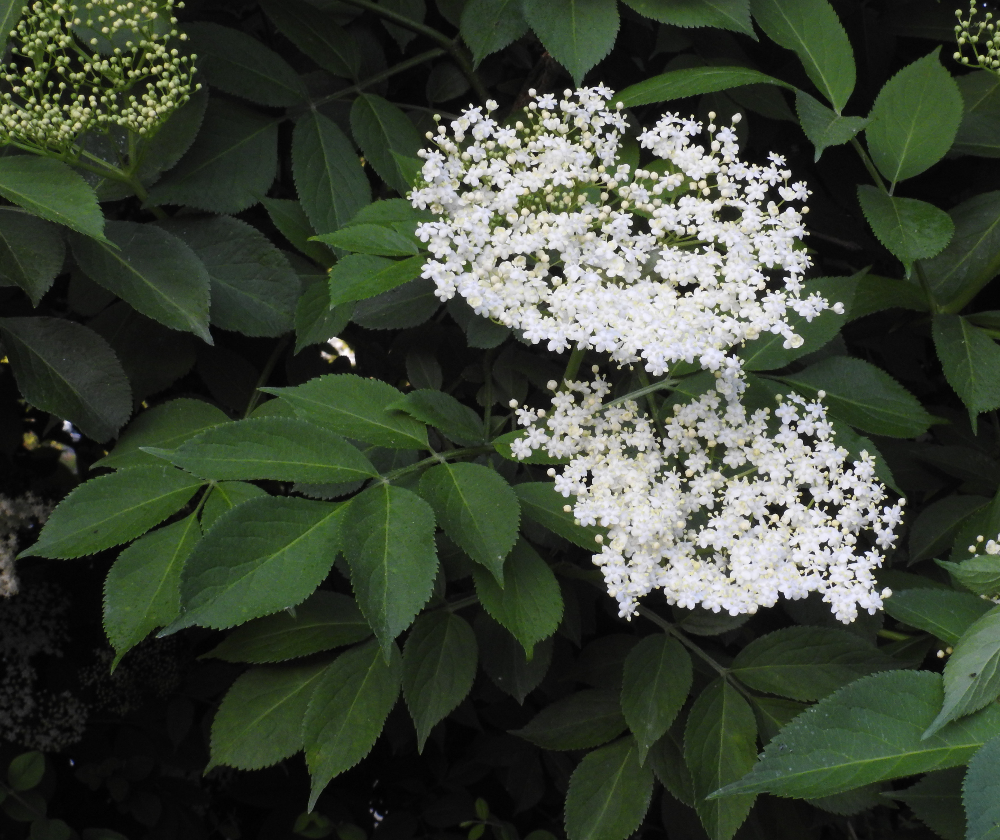
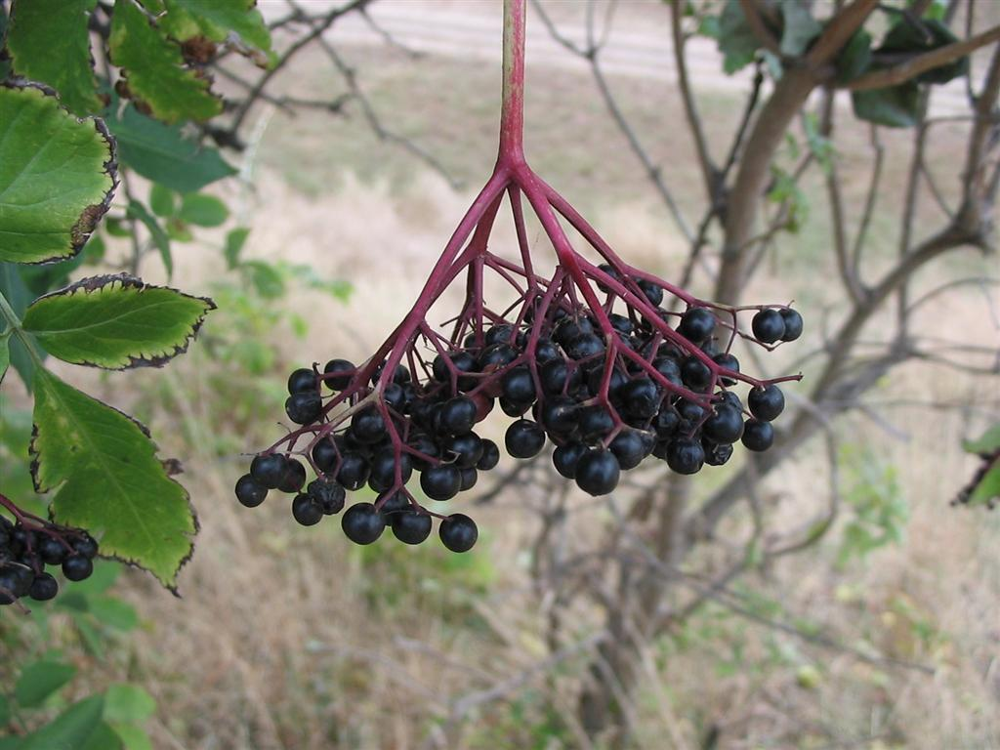

Sambucus nigra
| common name | elder | |
| en español | saúco | |
| plant family | Adoxaceae (moschatel) | |
| parts used | fresh and dried flowers, dried berries |
 from Wikimedia Commons by Robert Flogaus-Faust - Own work, CC BY 4.0
 from Wikimedia Commons by Nova, CC BY-SA 3.0
observations/description
"Sambucus nigra", Wikipedia
- deciduous shrub or small tree growing up to 20 ft tall and wide
- leaves are arranged in opposite pairs, pinnate with five to seven (rarely nine) leaflets, with a serrated margin
- hermaphroditic flowers have five stamens, which are borne in large, flat corymbs in late spring to mid-summer
- individual flowers are ivory white, with five petals, and are pollinated by flies
- fruit is a glossy, dark purple to black drupe produced in clusters in late autumn
- dark color of elderberry fruit occurs from its rich phenolic content, particularly from anthocyanins
distribution/conservation status
"Sambucus nigra", Wikipedia
- native to Europe as far east as Turkey
- native in, and common throughout, the British Isles
- introduced to parts of most other continents of the world
- hedges, waste-ground roadsides, and woods are the typical habitats for the species
primary actions
The Yoga of Herbs, p. 201
- diaphoretic, diuretic, alterative
The Modern Herbal Dispensatory, p. 226-7
- anti-inflammatory, antiviral, decongestant, diaphoretic, febrifuge, nutritive
The New Age Herbalist, p. 37
- diaphoretic, anticatarrhal, anti-inflammatory, mild laxative
system affinities
respiratory, immune
primary uses
Spiritual Herbalism, p. 186
- berries provide a sweet and gentle medicine for the immune system
- potent antiviral that helps shield the body from viruses
- children respond well
- good for clearing colds or flu
- can be used as a preventative and as a treatment for acute illness, unlike other immune support herbs like astragalus (preventative only) or echinacea (acute only)
- flowers are diaphoretic
The New Age Herbalist, p. 37
- tisane of flowers induces a sweat
- with yarrow and peppermint as well
- circulation is encouraged by the bioflavonoids
- flowers also reduce bronchial and upper-respiratory cattarh and treat hayfever
- externally
- macerate of flowers can be used as an eyewash for conjunctivitis and as a compress for chilblains
- ointment of flowers can be used for skin irritation and chilblains
- gargle of elderflower vinegar alleviates tonsilitis and sore throat
- flowers have a mild laxative action and have a reputation for treating rheumatism and gout
- berries are mildly laxative and sweat-inducing
- as a syrup the berries make a winter cordial for coughs and colds
The Modern Herbal Dispensatory, p. 226-7
- flowers are an excellent remedy for acute ailments
- with yarrow and peppermint to promote perspiration and reduce inflammation
- can shorten the duration and severity of flue symptoms
- topically in skin lotions
- berries
- have mild laxative and decongestant action
- inhibit the spread of many viral infections
- bark not commonly used now, but was traditionally used as a laxative and to soothe mucous membranes
energetics
The Yoga of Herbs, p. 201
- decreases pitta, kapha; vāta neutral
- bitter/pungent taste - pungent post-digestive effect
- cooling
The Modern Herbal Dispensatory, p. 226-7
- cooling, drying
pharmacology
The New Age Herbalist, p. 37
- flowers
- essential oil (incl. palmitic, linoleic, linolenic acids), triterpenes, flavonoids (incl. rutin), pectin, mucilage, sugar
- berries
- sugar, fruit acids, vitamin C, bioflavonoids
- leaves
- cyanogenic glycosides, vitamins, tannins, resins, fats, sugars, fatty acids
contraindications/pharmaceutical interactions/warnings
Spiritual Herbalism, p. 186
- cook or dry elderberries before use
- fresh berries are a laxative
- do not use bark or root
- many poisonous berries out there
- poke is a strong lookalike to me
The New Age Herbalist, p. 37
- leaves, roots, and bark should not be used internally
The Modern Herbal Dispensatory, p. 226-7
- all parts of the fresh plant are mildly toxic and can cause nausea and diarrhea
- even dried, the stems, bark, and root can cause nausea
- flowers should be dried before using
- berries should be dried or boiled before use
preparations
The Modern Herbal Dispensatory, p. 226-7
- standard infusion
- dried flowers, 30 g: 1 L
- tincture
- dried flowers, 1:5, 60% alcohol
- glycerite
- dried flowers, 1:6, sealed simmer method
- dried berries, 1:5, sealed simmer method
- oil/salve
- flowers
Herbal Materia Medica, p. 33
- standard infusion
- dried flowers, 1:32
- cold infusion
- dried leaves, 1:32
The Herbal Medicine-Maker's Handbook, p. 110, 192, 200
- hot infusion
- dried flower and berry, 2-5 g: 8 oz
- glycerite
- fresh berries, 1:2, 80-90% glycerin
- dried flowers, 1:5, 60% glycerin
- oil
- dried flowers
dosage
The Modern Herbal Dispensatory, p. 226-7
- infusion: 4-8 oz, up to 3/day
- tincture: 1-3 mL, 2-4/day
- glycerite: 5-10 mL, 4/day
Herbal Materia Medica, p. 33
- standard infusion: 2-4 oz, up to 3/day
- cold infusion: 1-2 oz, up to 3/day
The Herbal Medicine-Maker's Handbook, p. 110, 187
- hot infusion: 8 oz, 3/day
- glycerite: up to 5 mL, 2-3/day
extra information
The New Age Herbalist, p. 37
- previously under family Caprifoliaceae (honeysuckle)
personal experiences/simples
witchcraft
Spiritual Herbalism, p. 186
- true to its name: offers the protection of a spiritual elder
- shields us from storms and connects us to the land of the faeries
- wood makes magical wands that invoke protection upon their users
The Witch's Encyclopedia of Magical Plants, p. 112-3
- elder tree is home to spirits: initially a old female spirit in various cultures, later adapted to witches and became associated with black magic
- burning elder wood could cause bewitchment
- could also be used as a charm against witches and anything negative (i.e., lightning)
- believed to make faeries visible
- elements: air, earth, fire, water
- astrological influence: mercury, venus
recipes
sources
Easely, Thomas and Steven Horne. The Modern Herbal Dispensatory (2016)
Frawley, David and Vasant Lad. The Yoga of Herbs: An Ayurvedic Guide to Herbal Medicine (1986)
Goldberg Blackthorn, Samantha. Ace of Cups Herbal Medicine and Botanical Magic Herbal School (2024)
Green, James. The Herbal Medicine-Maker's Handbook: A Home Manual (2000)
Kynes, Sandra. The Witch's Encyclopedia of Magical Plants (2024)
Mabey, Richard et al. The New Age Herbalist (1988)
Moore, Michael. Herbal Materia Medica, Fifth Edition (1995)
Rose, Karen M. The Art & Practice of Spiritual Herbalism (2022)
"Sambucus nigra" on Wikipedia. Retrieved 13 June 2025.